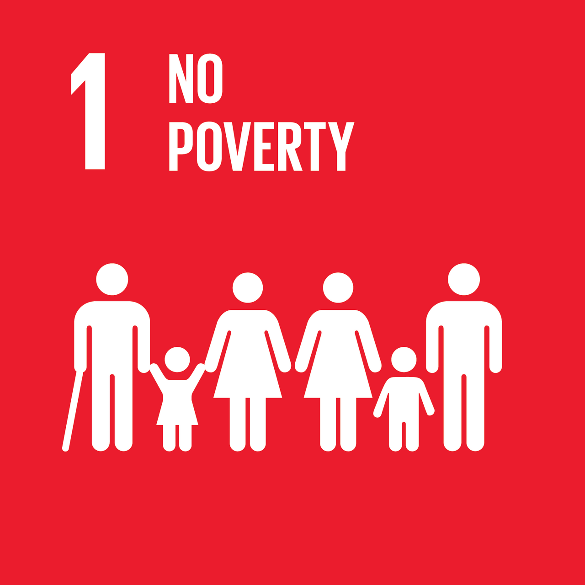
Tanpa Kemiskinan
Memastikan tidak ada lagi orang yang hidup dalam kemiskinan, di mana pun mereka berada.
Dunia yang lebih baik tidak selalu dimulai dari hal besar. Kadang cukup dari hal sederhana yang kita lakukan hari ini. Yuk, kenalan dulu sama SDGs.
Lihat 17 TujuanSDGs adalah singkatan dari Sustainable Development Goals, atau Tujuan Pembangunan Berkelanjutan. Isinya 17 tujuan yang disepakati negara-negara anggota PBB pada tahun 2015, dan semuanya ditargetkan tercapai pada tahun 2030.
Intinya, dunia sepakat bahwa pembangunan bukan cuma soal ekonomi. Manusia dan lingkungan juga harus ikut terjaga. Prinsip utamanya: tidak ada satu orang pun yang boleh tertinggal.
Ringkasan singkat dari tiap tujuan.

Memastikan tidak ada lagi orang yang hidup dalam kemiskinan, di mana pun mereka berada.
Semua orang bisa makan cukup dan bergizi setiap hari.
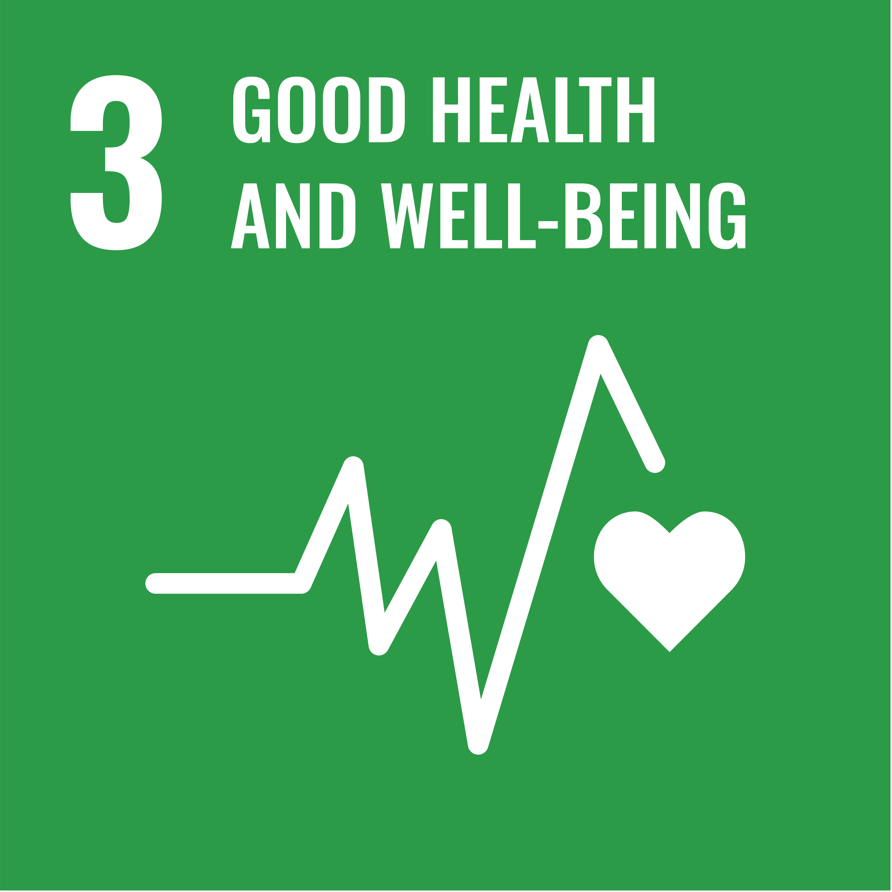
Semua orang, dari bayi sampai lansia, bisa hidup sehat dan mendapat layanan kesehatan.
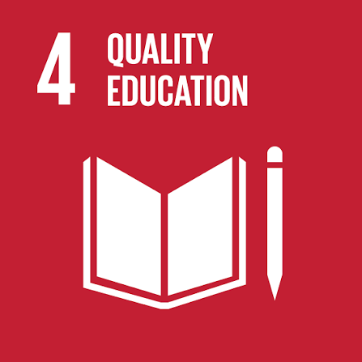
Setiap anak berhak sekolah dengan kualitas yang baik dan adil.
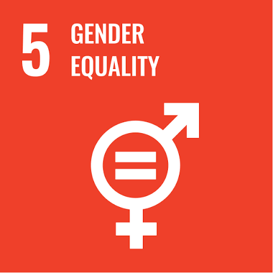
Perempuan dan laki-laki punya kesempatan yang sama dalam hidup.
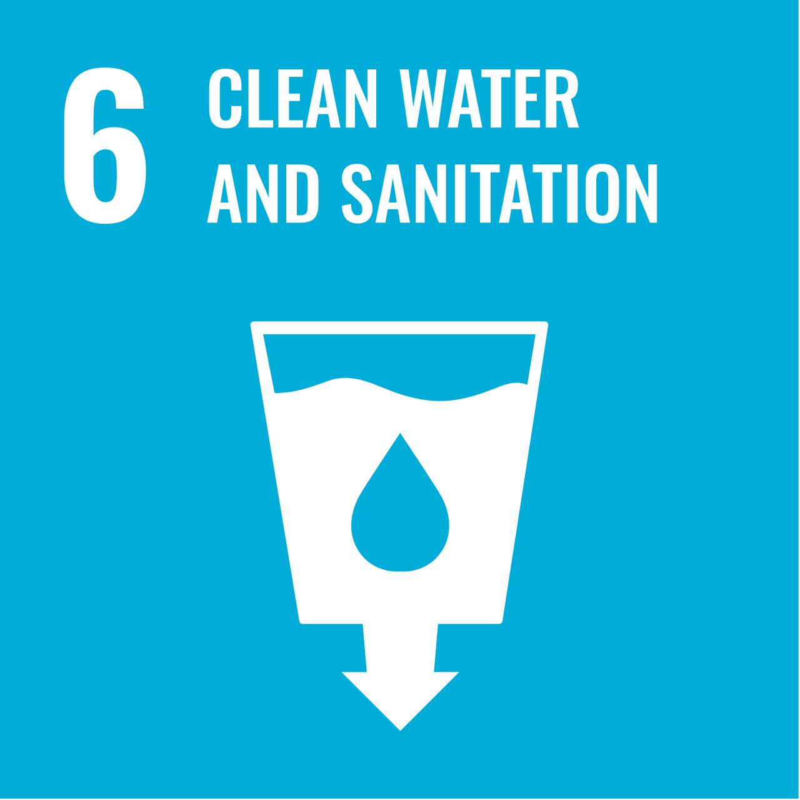
Semua orang bisa mendapat air bersih dan fasilitas sanitasi yang layak.
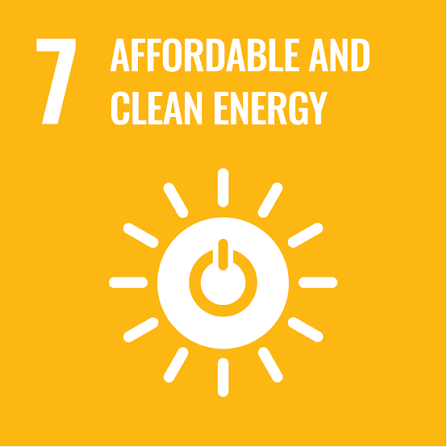
Listrik yang murah, stabil, dan ramah lingkungan untuk semua.
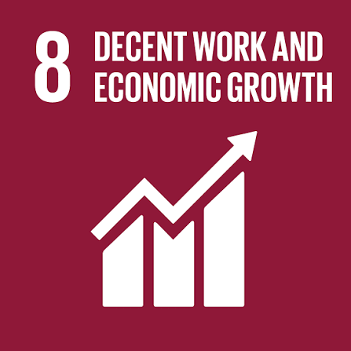
Pekerjaan yang aman dan adil, dengan ekonomi yang tumbuh untuk semua.

Jalan, internet, dan teknologi yang memadai untuk mendorong kemajuan.
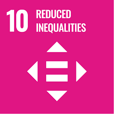
Jarak antara yang kaya dan yang miskin tidak boleh terlalu jauh.
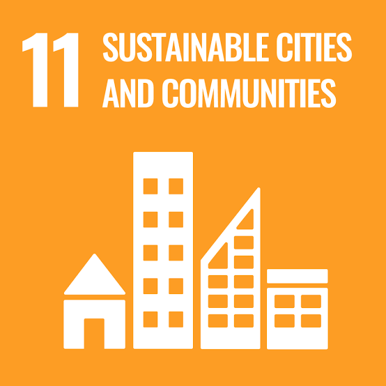
Kota yang aman, nyaman, dan tetap ramah lingkungan.
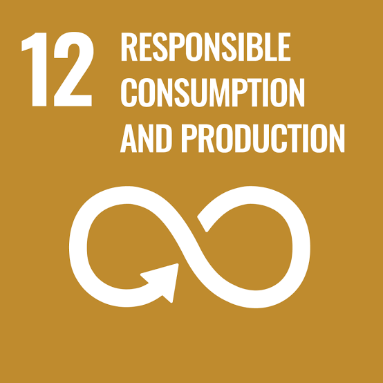
Pakai barang secukupnya dan kurangi sampah dari kebiasaan sehari-hari.
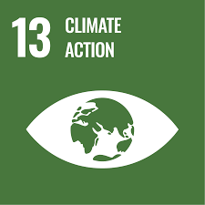
Bertindak dari sekarang untuk mengurangi dampak pemanasan global.

Menjaga laut dan semua makhluk hidup di dalamnya.
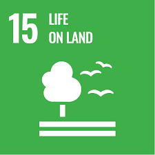
Melindungi hutan, tanah, dan hewan dari kerusakan.
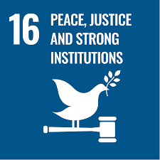
Masyarakat yang damai dan adil, dengan lembaga yang bisa dipercaya.
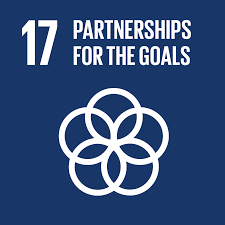
Semua pihak bekerja sama, karena tidak ada yang bisa melakukannya sendirian.
Aku memilih SDG 1 dan SDG 3 karena menurutku keduanya paling dekat dengan kehidupan sehari-hari.
Kemiskinan tidak hanya mengenai uang. Tetapi ini juga soal bisa makan layak, memiliki tempat tinggal, dan mendapatkan kesempatan untuk sekolah. Saya ingin agar lebih peka dengan orang-orang di sekitar yang mungkin sedang butuh bantuan.
Jika badan sehat, kita bisa belajar, bekerja, dan membantu orang lain dengan lebih baik. Sehat juga tidak hanya soal fisik, tetapi kesehatan mental juga sama pentingnya.